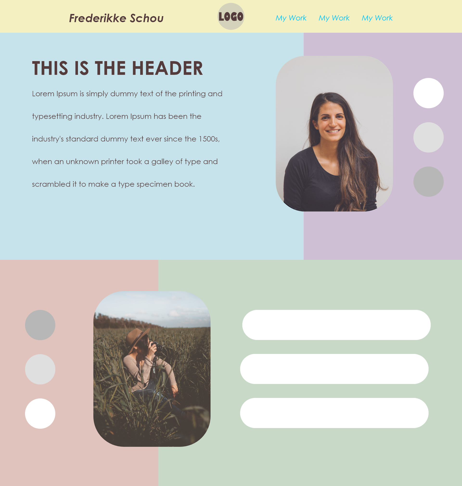

Mit navn er Max Carlsen og jeg er 22 år gammel bosat i København. Til hverdag læser jeg til multimediedesign
i Køge, og er på nuværende tidspunkt på mit første semester. Nedenfor kan du se nogle af mine værker, hvor jeg blandt andet har haft roller som projektleder og designansvarlig.
Grafisk Design
På uddannelsen arbejder vi meget med det visuelle aspekt af design processer. Vi
bliver derfor undervist i farvevalg, valg af font og meget mere af det der ligger til grund for at indkapsle
en virksomheds visuelle identitet gennem eksempelvis logoer.
Der er også meget fokus på video og lyd. Her arbejder vi primært i Adobe After Effects og
Premiere Pro hvor vi får stillet en opgave som vi selv skal fortolke som gruppe.
Web Design
På studiet arbejder vi også med webdesign. Vi følger rejsen helt fra brainstorm på farvevalg, til
udarbejdelse af webdesign i Adobe i XD, til at kode projektet i HTML og CSS.

Kontakt
Nu når du er kommet hele vejen ned, så håber jeg mit portfolio har vagt din interesse. Du
skal være mere end velkommen til og kontakte mig på nedenstående kontaktoplysninger.
Tlf: 60 90 47 83
Mail: maxcarlsen99@gmail.com
Linkedin:
Klik her